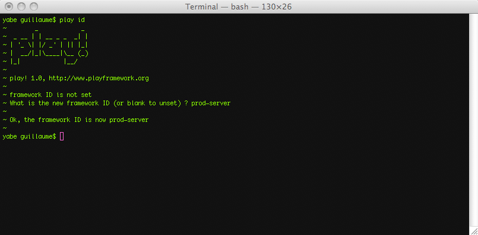

Manage application.conf in several environments
When you work in a team, different developers will use different configuration keys in their application.conf. For example, the log level or some database configuration. This generally leads to recurrent conflicts when you commit the file using your VCS.
Furthermore, different deployment environments – e.g. dev, test, staging and production – need different configurations.
The framework ID
To resolve this problem, Play allows you to give an ID to each framework installation. Use the play tool’s id command to define this ID:
play id

You can then prefix your configuration keys with the framework ID for which the configuration option is intended:
application.name=Cool app
application.mode=dev
application.log=INFO
# Configuration for gbo
%gbo.application.log=DEBUG
%gbo.db=mem
# Configuration for src
%scr.http.port=9500
# Production configuration
%production.http.port=80
%production.application.log=INFO
%production.application.mode=prod
Setting the framework ID from the command line
You can specify the framework ID to use for a particular command directly from the command line. For example to run an application in production mode you can use:
play run --%production
with these lines defined in the application.conf file:
application.mode=dev
%production.application.mode=prod
It should be compatible with all commands using the framework ID information. The default ID is still defined using the play id command.
By the way, play test is then equivalent to:
play run --%test
Continuing the discussion
Now we shall move on to Production deployment.